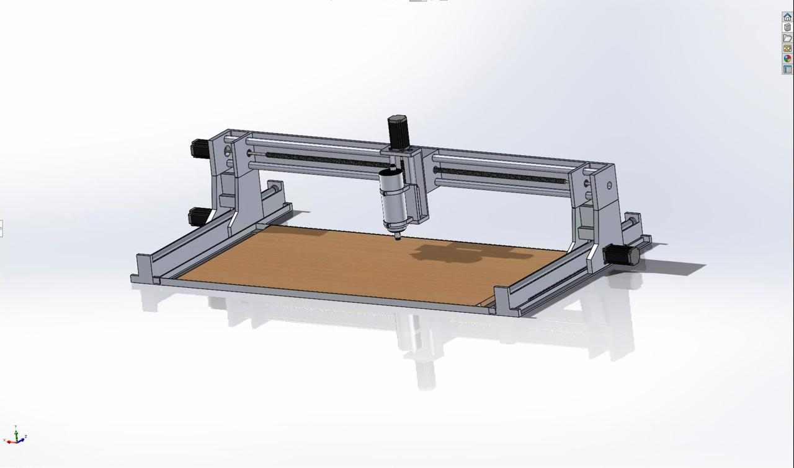
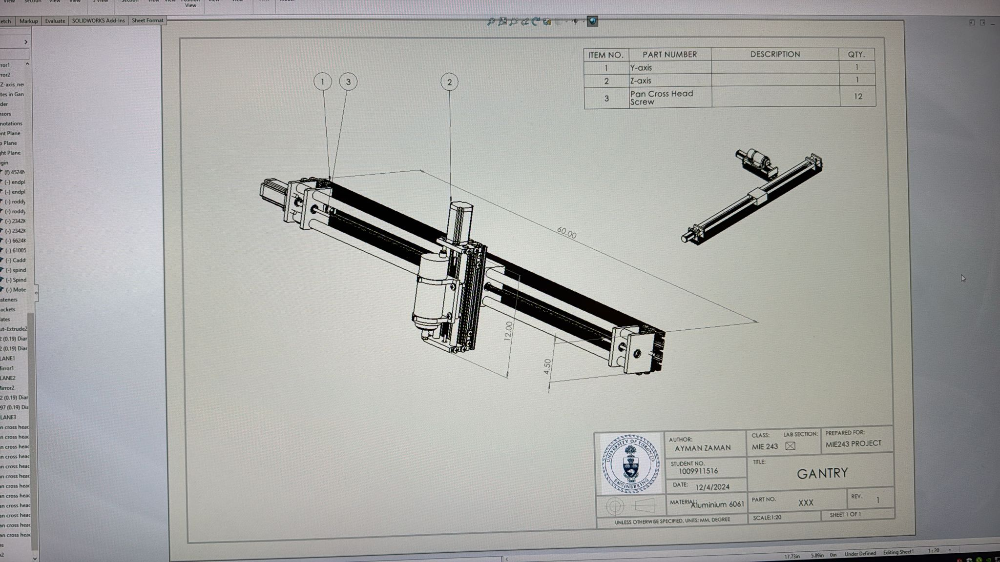

4×2 Compact CNC Router

Overview
The hobbyist CNC router market is growing, but most machines at the 4'×4' scale are priced beyond casual users and oversized for typical workshop spaces. The project brief was to design a CNC router that could match the capability of these machines for standard hobbyist materials — wood, plastics, and light metals — while being more compact and significantly cheaper.
The team targeted a 4'×2' work envelope: large enough to accommodate a standard plywood sheet without requiring the footprint or cost of a full-size machine. Engineering specifications included a minimum spindle power of 0.8 kW at 15,000 RPM, 3-axis operation, stepper motor precision of 0.9 to 1.8 degree step angle, and a total cost under $5,000.
Reflections
This project nearly fell apart three days before the deadline. I had designed a custom chassis from scratch — and when we ran it through SolidWorks cost estimation, the machining costs came back at roughly four times what we'd budgeted. We had to scrap the frame design and rebuild the entire assembly around McMaster-Carr extrusions and off-the-shelf structural components, essentially starting over with days to go.
On top of that, SolidWorks corrupted our assembly files more than once, forcing me to rebuild from scratch. It was the most stressful week of my semester — but it also taught me more about DFM than any lecture could. You don't forget the cost of custom machining after you've had to redesign around it under a deadline.
As team leader, I was making the design calls, running weekly check-ins, setting report deadlines, and doing most of the CAD work myself since one of my teammates was still learning SolidWorks. It was a lot to carry at once, but the experience of owning a project end-to-end — concept through final deliverable — is exactly the kind of work I want to keep doing.
Design Approach
I led the team through concept generation, candidate down-selection, and detailed design. Four candidate designs were developed at different price points — from a ~$1,500 low-cost build using lead screws and a Makita spindle, up to a ~$4,000 high-cost design with servo motors, water-cooled spindle, and belt drives — to explore the design space systematically.
The final design combined a rack-and-pinion system for x-axis actuation (chosen for speed and resolution over lead screws), ball screws for the y and z axes (chosen for precision and low backlash), a RATTM MOTOR air-cooled spindle at 24,000 RPM, and NEMA 23 stepper motors across all axes. The frame was built from aluminium 6061 extrusions for the gantry, with low-carbon steel for the base endplates and sidebars where the gantry load demanded higher strength — a decision informed by CES Selector material analysis.
All custom components were modelled parametrically in SolidWorks. GD&T and DFM/DFA principles were applied to define fits, tolerances, and surface finish requirements. Off-the-shelf McMaster-Carr hardware was integrated throughout to balance cost, lead time, and performance.
Validation & Deliverables
System validation results and performance trade-off analyses were presented to the Engineering Manager, supported by market benchmarking, engineering calculations, and SolidWorks simulations. Final deliverables included a fully toleranced parametric CAD assembly, 2D fabrication drawings, a complete Bill of Materials, and an engineering presentation with trade-off analysis.
